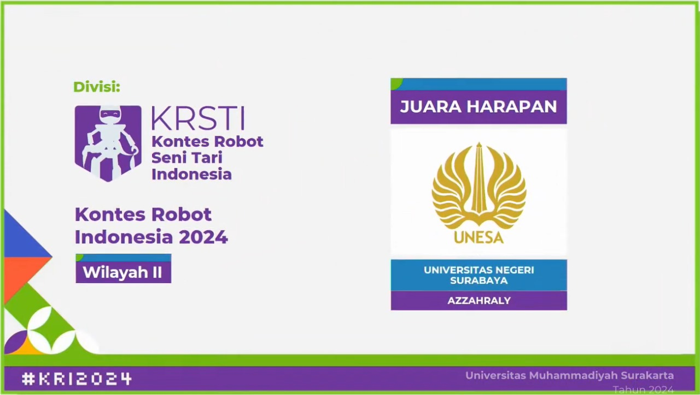

Azzahraly adalah tim riset yang berfokus pada pengembangan robot seni tari — robot yang dirancang untuk menari secara sinkron dan ekspresif mengikuti irama musik, sebagai inovasi dalam menggabungkan teknologi dengan seni pertunjukan tradisional dan modern. Tim ini beranggotakan mahasiswa dari berbagai latar belakang teknik yang bekerja sama merancang mekanik, elektronik, pemrograman, dan koreografi robot.
Sebagai Electrical Engineer, saya bertanggung jawab merancang, merakit, dan mengintegrasikan sistem elektronik robot, termasuk kendali motor, sensor, manajemen daya, serta memastikan komunikasi data berjalan stabil untuk mendukung gerakan robot yang presisi dan sinkron.
Selain itu, saya juga menjabat sebagai Ketua Tim Azzahraly, yang memimpin koordinasi antar anggota, merumuskan strategi pengembangan, mengatur jadwal, dan memastikan seluruh tahap proyek berjalan lancar sesuai target.
Sebagai tim, Azzahraly memiliki visi menjadi pelopor inovasi yang menggabungkan teknologi robotika dengan seni budaya Indonesia, serta aktif mengikuti berbagai kompetisi, pameran, dan seminar nasional maupun internasional. Melalui karya ini, kami berharap dapat berkontribusi positif pada pelestarian seni tari dengan pendekatan teknologi modern.